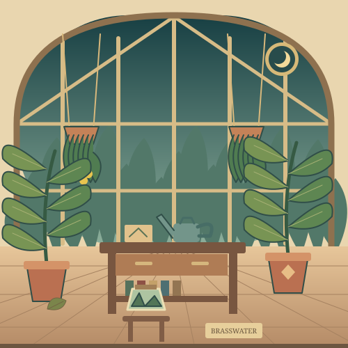

THE ARCHIVE OF SMALL CHANGES / FIELD NOTE 01
Brasswater Conservatory
02 / THE ALTEREDSomething is not quite the same

A QUIET OBSERVATION GAME
Brasswater
Conservatory
The gardener has been here.
Find five changes between two moments.
Click a changed detail in either picture.
A wrong guess adds one penalty. Take your time.
FIELD NOTE COMPLETE